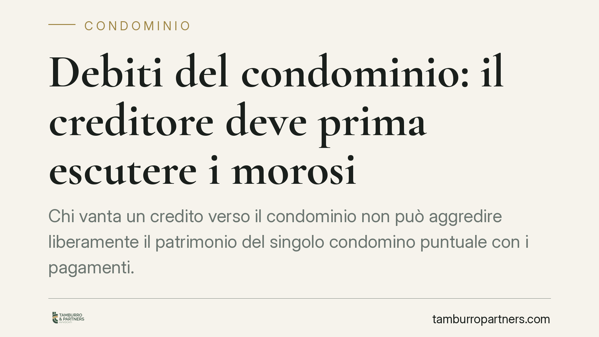

Debiti del condominio: il creditore deve prima escutere i morosi
Chi vanta un credito verso il condominio non può aggredire liberamente il patrimonio del singolo condomino puntuale con i pagamenti. La Cassazione ha ribadito che il creditore deve prima rivolgersi ai condomini morosi, potendo agire contro quelli in regola solo in via sussidiaria e nei limiti delle quote non versate. Una tutela concreta per chi paga nei termini.

Il caso
Un fornitore che ha eseguito lavori sulle parti comuni resta insoddisfatto perché il condominio non salda la fattura. La domanda è ricorrente: il creditore può bussare direttamente alla porta del condomino che ha regolarmente versato le proprie quote, perché è più solvibile e più facile da aggredire?
La risposta, confermata dalla giurisprudenza di legittimità, è negativa. Il creditore deve seguire un ordine preciso. Prima i morosi, poi — e solo in difetto — gli altri.
Inquadramento normativo
La disciplina è contenuta nell'art. 63, secondo comma, disp. att. cod. civ., come riformato dalla Legge n. 220/2012 (la cosiddetta riforma del condominio).
La norma stabilisce che i creditori non possono agire nei confronti degli obbligati in regola con i pagamenti se non dopo l'escussione degli altri condomini. In altre parole, il condomino puntuale gode di un beneficium excussionis: un beneficio di preventiva escussione che impone al creditore di tentare prima il recupero presso i condomini inadempienti.
La Cassazione Civile, Sez. II, con la sentenza n. 5043 del 17 febbraio 2023 e con successive pronunce, ha precisato i contorni operativi del meccanismo. L'amministratore ha un ruolo centrale: è tenuto a comunicare al creditore che ne faccia richiesta i dati dei condomini morosi. Solo dopo aver infruttuosamente aggredito costoro il creditore può rivolgersi ai condomini in regola.
Va aggiunto un limite quantitativo rilevante. L'obbligazione condominiale è parziaria, non solidale: ciascun condomino risponde in proporzione alla propria quota millesimale. Il condomino in regola, chiamato in via sussidiaria, risponde quindi nei limiti delle quote dei morosi e non per l'intero debito.
Implicazioni pratiche
Per il condomino puntuale la pronuncia significa una protezione effettiva: non può essere escusso al posto di chi non paga, se non quando il recupero presso i morosi sia risultato impossibile. Chi onora i propri obblighi non è il bancomat del condominio.
Per il creditore cambia la strategia di recupero. Agire subito contro il condomino più solvibile espone al rischio di eccezione di preventiva escussione e, con essa, a tempi e costi maggiori. Conviene individuare per tempo i morosi e documentare i tentativi di recupero.
Per l'amministratore aumenta la responsabilità gestionale. La tempestiva comunicazione dei nominativi dei morosi è un passaggio obbligato. Una gestione trasparente della morosità — con solleciti, decreti ingiuntivi e rendicontazione puntuale — riduce il contenzioso e tutela l'assemblea.
Resta fermo che il condomino in regola, se costretto a pagare in via sussidiaria, conserva il diritto di regresso verso il condomino moroso: può cioè recuperare quanto versato per conto di quest'ultimo.
Cosa fare in concreto
- Se sei un condomino puntuale: conserva le ricevute di pagamento delle quote. In caso di richiesta del creditore, eccepisci il beneficio di preventiva escussione previsto dall'art. 63 disp. att. cod. civ.
- Se sei un creditore: chiedi formalmente all'amministratore l'elenco dei condomini morosi e avvia il recupero prima nei loro confronti, documentando ogni passaggio.
- Se sei un amministratore: tieni aggiornato lo stato della morosità e rispondi senza ritardo alle richieste del creditore; il silenzio può esporti a responsabilità.
- Prima di pagare in via sussidiaria: verifica che l'importo richiesto sia contenuto nei limiti delle quote dei morosi e non ecceda la tua responsabilità parziaria.
- Dopo un pagamento sussidiario: attiva il regresso verso il condomino moroso per recuperare la somma anticipata.
Il punto fermo è questo: la solvibilità del singolo non legittima scorciatoie. Il creditore ha strumenti efficaci, ma deve usarli nell'ordine indicato dalla legge.
---
Contributo informativo a cura di Tamburro & Partners - Avv. Giuseppe Tamburro. Non costituisce parere legale.
Ogni condominio ha una storia a sé.
Se gestisci un'amministrazione e vuoi un confronto su una specifica questione condominiale, scrivi allo studio. Ti rispondiamo entro un giorno lavorativo.